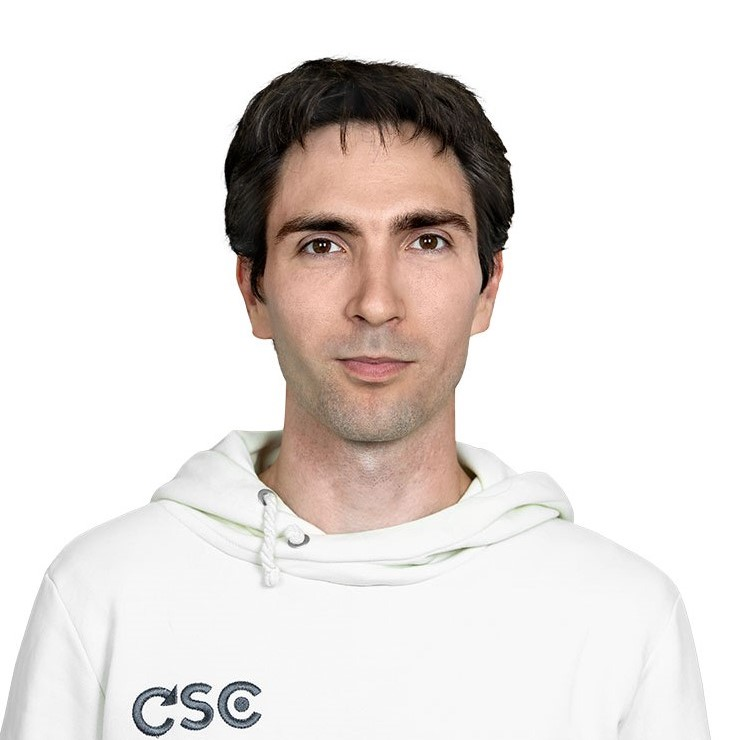

About Me
Hello! I’m Alex. I am passionate about education and machine learning. I am a skilled Lecturer, Project Manager and Data Scientist with 8+ years of experience in IT, data analysis, and educational programs for the IT industry.
Age
37
Email
ovalur@gmail.com
Address
Paphos, Cyprus
Professional Skills
Python
PyTorch
Math
Teaching
Deep Learning
Algorithms, Data Structures
Work Experience
Lecturer and Edu Project Manager at JetBrains
Jan, 2023 - Present
Have launched and develop new educational program
Computer Science and Artifitial Intelligence.
Head of ML programs at Yandex
June, 2022 - Jan, 2023
- Enrolled 100+ talented students in three partner master's programs of Yandex Data School
- Organized one-year Machine Learning course with modern approaches for 350+ participants
Associate Professor and Head of the educational program at Saint Petersburg State University
Sep, 2019 - Jun, 2023
- Launched new educational program Data Science in 2019, which immediately became popular among the best applicants in Russia, include winners of the International Olympiad in Mathematics (IMO)
- Created and taught one-year machine learning course with modern ML approaches. The average student's evaluation of teaching is 4.78 out of 5.0
- Developed with the group of students Python package for automatization of ML homeworks: mlpractice
- Created from scratch International Scientific and Methodological Center of St. Petersburg State University (Russian Ministry of Education grant) in 2020
Academic Programs Manager at Yandex Data School
June, 2013 - June, 2022
- Launched a branch of Yandex Data School in Novosibirsk in 2013
- Expanded the Yandex Data School branch in cooperation with JetBrains to Computer science center in 2017
- Organized open Machine Learning training sessions for Kaggle competition participants in 2019
Data Scientist at Yandex
Feb, 2015 - Jul, 2018
- Increased the accuracy of the organizations database twice by 2% and 3% (the main goal of the team)
- Automated and optimized data update processes in call centers and in Toloka
- Worked in a group of six data scientists. We developed soft in Java, SQL, Python, a little bit of C++
Researcher at Institute of Computational Technologies SB RAS
Sep, 2009 - Feb, 2015
- Developed a new numerical model that takes into account the change in the geometry of the flow path over time
- Accelerated calculations by the Fortran language software package available in the laboratory by 16 times (MPI parallization per block), and another 7 times (OpenMP flows inside the block)
- Made PhD thesis (in russian)
Education
Machile Learning and Search Algorithms from Yandex Data School
2013 - 2016
Got a deep understanding of programming languages, search algorithms and data structures, and machine learning.
Masters in Math Modeling from Novosibirsk State University
2007 - 2009
Investigated models of 3D unsteady flows in hydraulic turbines, numerically solving the Navier-Stokes equations.
Bachelor of Math from Novosibirsk State University
2003 - 2007
Explored the combinatorial properties of words over finite alphabet in the field of theoretical cybernetics.